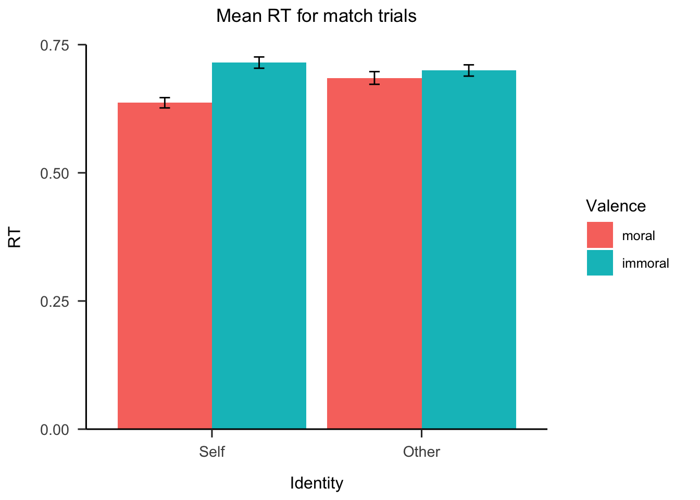
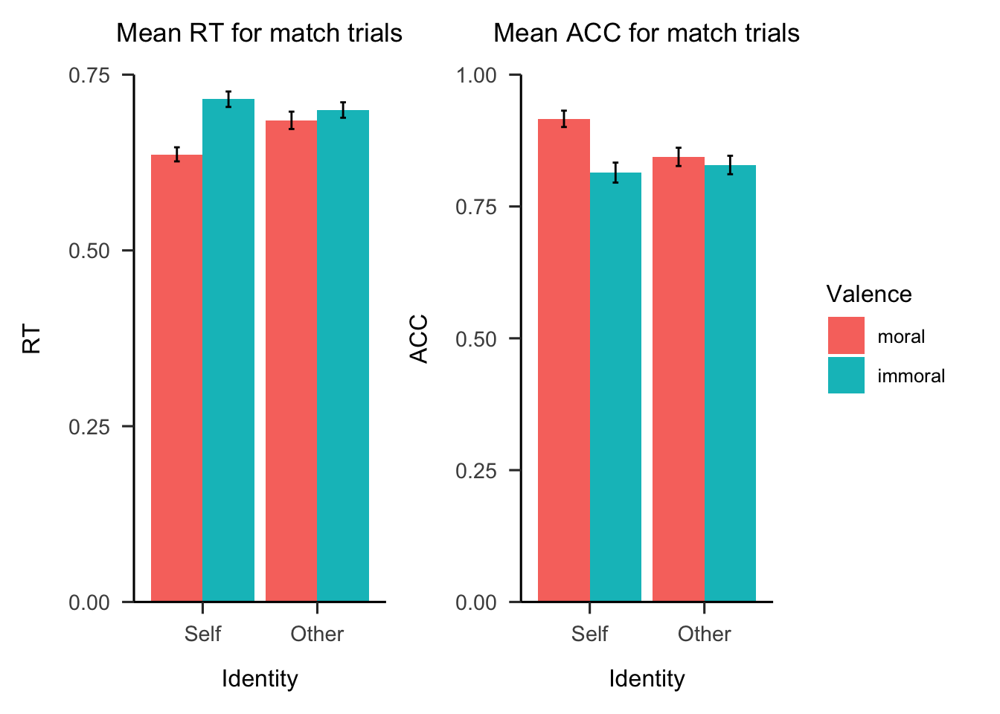
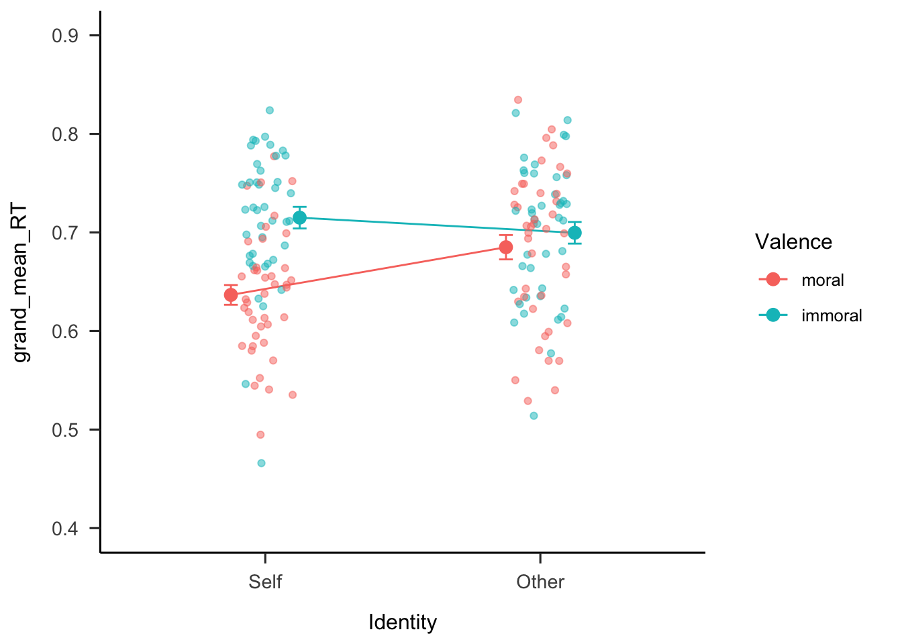
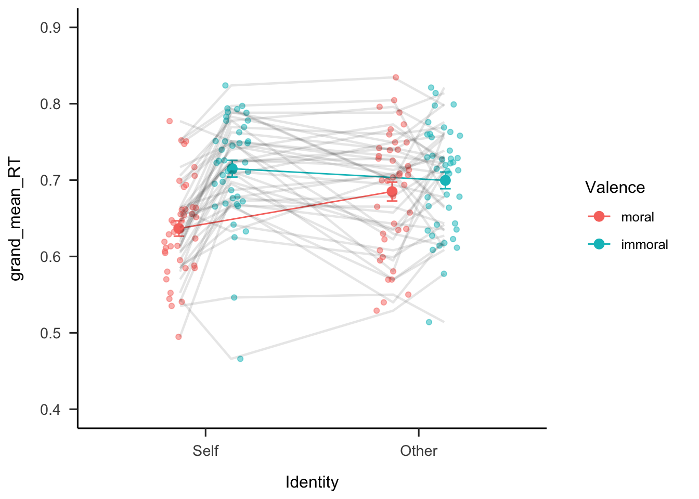
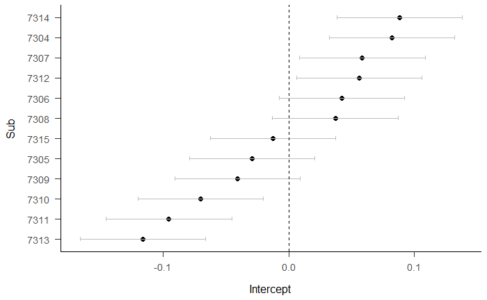
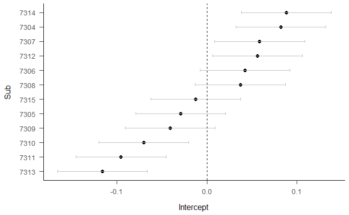
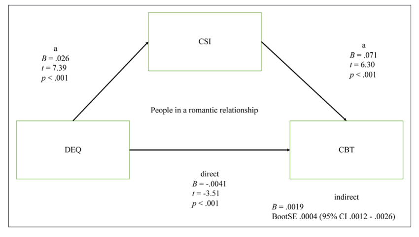
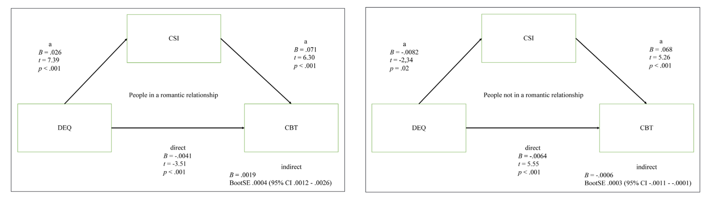

Chapter 12 第十二讲：数据可视化进阶
12.1 作图的必要性和作图数据处理
我们在前两章对心理学和社会科学中最常用的回归模型进行了讲解。在数据分析的过程中，最关键的并不是如何用R代码，而是如何正确地使用R代码。这就意味着我们要去学习代码其背后的统计知识，所以我们前面对回归模型进行了讲解。当我们分析完数据并且有适当的知道解读结果时，我们可能希望将结果以一种美观的方式呈现给读者，向读者传达我们解读出的有价值的信息。这里需要对数据进行进一步的可视化。
前面章节也讲到过可视化，当时主要的目的是对数据进行初步的探索，让我们可以快速地辨别和发现数据之间的一些关系，帮助我们快速地了解数据。但这里本章要讲的数据可视化，是针对如何得到一个可发表的图。
12.1.1 为什么要进行可视化及可视化的原则
经常读论文的朋友可能会发现，读了许多篇论文后，我们会形成一个习惯——先看标题，然后看摘要，接着就开始看文章的图表。为什么会形成这样的顺序呢？这是因为科学论文中，图表在很多情况是用于展示最关键的信息。好的数据可视化可以做到”一图胜千言”。但要画出一张漂亮且直观的图片，需要经过许多思考的。
在R中我们仍然用ggplot2这个包进行画图。如何画好一张图呢？
首先，要清楚的是：想要通过可视化达到什么样的目的。例如，在心理学实验研究中，方法部分的流程图和结果部分的统计结果图，目标肯定是不一样的。从这个角度讲，我们不仅要知道作图的技术，还要灵活地通过可视化来更好地传达自己想要表达的“意”。
其次，我们也需要大致知道好的可视化的标准。这里我将可视化的标准与翻译进行类比，认知好的可视化需要做到信、达、雅三个标准。信，是指可视化要传递足够的信息量。如果读者经常看顶刊的文章会发现，顶刊上图片的信息量越来越大，尤其在生物医药领域，一个图通常包含非常多的子图，每一个子图又包含了不少的元素。当然这并不一定是推荐的方式，信息量应该均衡，让人能一眼可以看出表达信息。达，是指图的逻辑性，图片的线条、图例等要有层次感，让人可以清晰看到到元素之间的内在联系。雅，是指要追求美观。对比一下普通期刊和Science、Nature这些顶刊上的图片，会发现顶刊上的图片普遍更美观。国内也有一本图片很美观的期刊The Innovation，其编辑部有专门的美工对图片色彩进行打磨，这也充分体现出图片美观的重要性。
当然这里仅将这些原则罗列给诸位，要做出好看的图，需要不断地打磨和在实践中不断提升自己的作图技巧。
12.1.2 作图数据准备
我们先来导入本章所要用到的包。
if (!requireNamespace('pacman', quietly = TRUE)) {
install.packages('pacman')
}
pacman::p_load(
# 本节课需要用到的 packages
here, tidyverse, reshape, bruceR, ggplot2, patchwork, magick, ggdist)
options(scipen=99999,digits = 5)数据仍然是之前所用到的认知实验的数据。这里为了方便，我们仅选取了“match”条件下的数据。我们之前发现“Valence”和“Identity”之间有显著的交互作用。作图开始时，我们可能首先会想到的这意味着两条交叉的线，两条线的端点分别是各个条件下的均值。因此我们需要先得到各个条件下面的均值。
首先这是实验中每个试次的数据。
df.match.trial <- bruceR::import(here::here("Book",'data','match','match_raw.csv')) %>%
tidyr::extract(Shape,
into = c('Valence', 'Identity'),
regex = '(moral|immoral)(Self|Other)',
remove = FALSE) %>% #将Shape列分为两列
dplyr::mutate(Valence = factor(Valence, levels = c('moral','immoral'), labels = c('moral','immoral')),
Identity = factor(Identity, levels = c('Self','Other'), labels = c('Self','Other'))) %>%
dplyr::filter(ACC == 0 | ACC == 1,
RT >= 0.2 & RT <= 1.5,
Match == 'match',
(!Sub %in% c(7302,7303,7338)))
head(df.match.trial, 4) %>% DT::datatable()接下来我们整合试次，得到每个被试在4中条件下的均值。
df.match.subj <- df.match.trial %>%
dplyr::group_by(Sub, Identity, Valence) %>%
dplyr::summarise(RT_mean = mean(RT),
ACC_mean = mean(ACC)) %>%
dplyr::ungroup()## `summarise()` has grouped output by 'Sub', 'Identity'. You can override using the `.groups` argument.因为我们在作图时想看到的是总体的交互作用，因此我们将所有被试的数据平均得到一个总体在4种条件下的RT和ACC均值。在下面的代码中，大家可以发现SD和SE，这是因为我们在作图时还需要在均值的基础上加上误差棒（error bar）。这里我们需要将误差棒和字母”T”进行区分。因为之前有个研究者拿字母”T”冒充误差棒，当然后来被人发现了，还在社交媒体上火了一把。这也提示我们作图时，拿最基础的柱图举例，不仅要画出集中趋势（平均值），还要画出离散趋势（误差项）。
df.match.sum <- df.match.subj %>%
dplyr::group_by(Identity, Valence) %>%
dplyr::summarise(grand_mean_RT = mean(RT_mean),
SD_RT = sd(RT_mean),
SE_RT = SD_RT/sqrt(n()-1),
grand_mean_ACC = mean(ACC_mean),
SD_ACC = sd(ACC_mean),
SE_ACC = SD_ACC/sqrt(n()-1),
n = n()) %>%
dplyr::ungroup()## `summarise()` has grouped output by 'Identity'. You can override using the `.groups` argument.整体的均值加上误差，这样的图在传统意义上已经足够了。但是最近几年，大家发现如果只呈现总体趋势，对读者是有误导性的。如果我们呈现每个被试数据的话，读者会发现，整体的效应量实际上没有那么大。因此最近整体的趋势是鼓励大家在作图时不仅要可视化整体数据，还要将每个个体的数据也呈现在图上。这样能够保证读者在读图时不会过高地估计实验的效应量。
12.2 基础作图
12.2.1 ggplot2基础回顾
让我们再来回顾一下ggplot2的一些基础知识，gg的全称是grammar of graphics，即作图的语法。

ggplot2的基本原理就是图层的叠加，这和Photoshop的逻辑是很类似的。

ggplot2的图层叠加主要分为分为主要图层和可选图层。主要图层主要包含了数据（data），映射（aesthetics）和图形（geometries）。在代码中，便是如下图所示的，首先放入数据data，然后我们需要对数据建立空间上的映射(MAPPINGS)，最后再决定用什么样的几何图形对映射的数据进行可视化，也就是图中红色的部分，这些红色的图形又通过加号进行叠加。这就是基础的主要图层。

12.2.2 主要图层
我们先用总体的数据来绘制主要图层。在下面的代码中，我们放入了总体数据df.match.sum；接着将x轴定义为”Identity”，它有两个取值”self”和”other”，y轴定义为总体的反应时；填充fill指的是我们所用的图例，我们将不同的Identity的柱子用Valence进行填充；最后我们用geom_bar()这一函数来定义所要画的是柱状图，再加上误差棒geom_errorbar()。这样就做出了一个2×2的条形图。
# 以柱状图为例
p1 <- ggplot2::ggplot(data = df.match.sum, aes(x = Identity, y = grand_mean_RT, fill = Valence)) +
ggplot2::geom_bar(stat = "Identity",
position = "dodge") +
ggplot2::geom_errorbar(data = df.match.sum,
aes(ymin = grand_mean_RT - SE_RT, ymax = grand_mean_RT + SE_RT),
width=.1,
position = position_dodge(.9))
p1
值得注意的是，geom_errorbar()中我们映射的是y的最大值/最小值是整体RT加上/减去SE，所以误差棒表示的是均值上下各一个标准误，虽然大部分情况下研究者都用标准误来作为误差棒，但也有会用标准差SD来作为误差棒的。另外，我们可以用width定义误差棒的宽度，position_dodge()将误差棒进行小幅度错开，这也对应了前面柱状图里面position = "dodge"。
12.2.3 可选图层
上面所绘制的图其实不太符合心理学中APA的格式要求。R默认绘制出来的图有一些缺点：比如背景有阴影和框线、y轴不是以0为起点、轴的字体不是特别突出。另外我们可以看到ggplot2的默认字体是很小的，这也是很多研究者吐槽的一点，如果不对字体进行调节是比较影响作图的直观性的。
这些问题需要我们加入额外的图层来加以解决，这就是可选图层。例如我们可以用scale_xxx()函数自定义坐标轴的一些信息,用theme_xxx()函数来切换图片的主题。

这里我们直接在主要图层p1的基础上累加可选图层。下面的代码中，expand=c(0,0)让坐标原点从零点开始；breaks = seq(0, 0.75, 0.25)使得y轴以0开始，0.75结束，以0.25作为最小单位；limits = c(0, 0.75)则限定了y轴的范围，这些都通过scale_y_continuous()这一函数来进行调节，这是因为RT是连续变量，所以对应的是”continuous”。labs()用于修改主题和y坐标轴的标题。最后我们使用papaja包下的theme_apa()函数让图片自动符合APA主题。
# 以柱状图为例
p2 <- p1 +
ggplot2::scale_y_continuous(expand=c(0, 0),
breaks = seq(0, 0.75, 0.25),
limits = c(0, 0.75)) +
ggplot2::labs(title = "Mean RT for match trials", y = "RT") +
papaja::theme_apa()
p2
这里绘制的图整体是符合APA格式的，它以零点作为起点，没有背景的灰色和框线。同理，我们将主要图层和可选图层全部写在一起，可以得到ACC的图。

12.2.4 同时呈现多张图片
现在我们有了两张图，一张RT，一张ACC，我们希望让这两张图一起呈现，那么我们应该如何将二者拼在一起呢？这里我们将介绍两种方法。
第一种方法是分面(Facet)，我们可以把画框当作一个面板，只要我们在数据框里面有分类的变量作为依据，就可以据此将不同的图片绘制在面板上。Facet也可以被认为是图层的一种，也是通过”+“加号叠加在原始图片上，可以分为一维(facet_wrap)和二维(facet_grid)两种，下图所示为二维，由于不同的子图之间有很多变量是相同的，这样陈列在一起方便我们进行肉眼上的比较和观察。

在我们的数据中，RT和ACC在x轴上的变量是一致的，但是y轴的因变量是不同的，因此我们需要一个额外的变量去对RT和ACC进行分类和标记，然后R才能根据这个不同的标记进行分面板的绘制和呈现。这听起来有点复杂，实际上就是意味着我们在呈现数据的时候要合并RT和ACC。在下面的代码中，我们将之前的”grand_mean_RT”和”grand_mean_ACC”全部重新命名为grand_mean，SD和SE也进行类似的操作，合并完后我们再新增一个叫做DV的变量对RT和ACC进行分类。
df1 <- df.match.sum[,-c(6, 7, 8)]%>%
dplyr::rename(grand_mean = grand_mean_RT,
SD = SD_RT,
SE = SE_RT) %>%
dplyr::mutate(DV = "RT")
df.match.sum.long <- df.match.sum[,-c(3, 4, 5)] %>%
dplyr::rename(grand_mean = grand_mean_ACC,
SD = SD_ACC,
SE = SE_ACC) %>%
dplyr::mutate(DV = "ACC") %>%
rbind(df1,.)
rm(df1)
head(df.match.sum.long, 3) %>% DT::datatable()此时，我们的数据框就变成了一个长形的数据，并使用DV这一列对数据因变量进行分类。合并与分类结束之后，我们就可以使用facet来进行呈现了。在下面的代码中，papaja::theme_apa()这一行之前其实和前面提到的代码是一致的，只是将y定义为合并之后的因变量grand_mean。这时我们需要新增的就是放入DV这一分类变量，scales = "free_y"表示在不同面板上y轴的单位不固定，根据数据情况来自动调整。最后根据实际情况增加一些title和轴上的label。
p4 <- df.match.sum.long %>%
ggplot2::ggplot(.,
aes(x = Identity,
y = grand_mean,
fill = Valence)) +
ggplot2::geom_bar(stat = "identity",
position=position_dodge(),
) +
ggplot2::geom_errorbar(aes(ymin = grand_mean-1.96*SE,
ymax = grand_mean+1.96*SE),
width = .1,
position = position_dodge(.9)) +
papaja::theme_apa() +
ggplot2::facet_wrap(~DV, scales = "free_y") +
ggplot2::labs(title = "Summary data for matching trials",
x="Identity",
y="mean")
p4
可以看到合并后的图片如上图所示，共享一个y轴标签”mean”。可以看到因为没有使用scale_y_continuous()函数对y轴进行调整，因此这里y轴的起点并不是0，读者可以参照上面的代码来完善这幅合并之后的图。
第二种方法是使用patchwork。这种方法比较简单粗暴，不需要进行数据预处理，直接+在一起就可以，plot_layout(guides = "collect")指将图例合并起来。

我们在图上可以观察出交互作用，红色柱子相连的话，其斜率是比绿色柱子相连的斜率更大的，也就是二者会相交。如果我们将y轴的范围缩短一些，这种交互作用的趋势将会在图上更显著地呈现出来。
以上所讲的这些总结起来包括了数据处理和图形美化这两部分，如下图所示（注：本图来自《R语言数据可视化之美：专业图表绘制指南》）。

12.3 进阶作图
12.3.1 整体和个体效应共存的图
刚才我们提到了研究者还希望呈现除了整体之外的被试个体的数据，这就意味着要去了解更多关于图层叠加的特点和技巧。比如我们想要得到下面这样效果的图，我们将之前的柱状图改成线的方式进行呈现，可以明显看到交互作用的存在；另外还将每一个被试的数据也放在了图上，以RT图中self的条件下为例，可以看到大部分被试跟整体趋势是一致的，也就是moral下面反应时比immoral更短，然而也有几名反过来的被试。这样就把群体水平和个体水平的信息很好地呈现在一幅图上了。那么如何做出这样的图呢？

首先我们要画出整体的均值，映射上和刚才所做的一致，图形的选择上，我们将柱状图geom_bar()替换为线图geom_line()，并用geom_point()将线的两端变成两个较大的点，并使用position_dodge(0.5)将点和线都错开一些并且互相对齐。同样的，我们加上error bar和修改y轴的坐标。值得注意的是，这里y轴的选取相比前面要更广，因为希望将所有被试的数据都纳入进来。以下是整体数据的线图代码。
s1 <- df.match.sum %>%
ggplot2::ggplot(.,
aes(x = Identity,
y = grand_mean_RT,
group = Valence,
color = Valence)) +
ggplot2::geom_line(position = position_dodge(0.5)) +
ggplot2::geom_point(size = 3,
position = position_dodge(0.5)) +
ggplot2::geom_errorbar(aes(ymin=grand_mean_RT-SE_RT,
ymax=grand_mean_RT+SE_RT),
width=.1,
position = position_dodge(0.5)) +
ggplot2::scale_y_continuous(limits = c(0.4, 0.9)) + #选取能纳入全部散点的范围
papaja::theme_apa()
s1
接下来我们希望加入每个被试的数据点，依然使用geom_point()这个函数，可以注意到这里用到的是每个被试的数据df.match.subj，而不是前面的df.match.sum，代表每个被试在4种实验条件下的均值。下面是相应的代码。
s2 <- s1 +
ggplot2::geom_point(data = df.match.subj,
aes(x = Identity,
y = RT_mean,
group = Valence))
s2
可以看到确实把被试的数据点画了出来，但是似乎不是很美观，所有点都叠在一起。于是我们使用position = position_jitter(width = 0.1)这一语句将数据点抖动错开。
s3 <- s1 +
ggplot2::geom_point(data = df.match.subj,
aes(x = Identity, y = RT_mean, group = Valence),
position = position_jitter(width = 0.1),
alpha = 0.5)
s3
但是我们发现数据点还是没有完全错开，moral和immoral两种条件下面的点还是混杂在一起。那么应该如何得到规律的抖动呢？可以看到上面的点是根据x轴的两个条件在进行抖动错开，实际上我们需要点根据moral和immoral进行抖动错开，因此我们需要设置新的基线。
我们加入新的位置变量conds。首先我们需要明白，虽然坐标轴上我们看到的x是self和other，但实际上它们真实的值是0和1，因此我们需要设置4种情况，self下的两种情况下，坐标分别是1±0.12；而other条件下则是2±0.12。
df.match.plot <- df.match.subj %>%
dplyr::mutate(conds = case_when(Identity == "Self" & Valence == "moral" ~ "0.88",
Identity == "Self" & Valence == "immoral" ~ "1.12",
Identity == "Other" & Valence == "moral" ~ "1.88",
Identity == "Other" & Valence == "immoral" ~ "2.12"),
conds = as.numeric(conds))接下来讲conds作为x变量来画被试个体数据的点图。这时候点的基线就变成了conds下面的4种条件，而不是原来的self和other这两种基线。
s4 <- s1 +
ggplot2::geom_point(data = df.match.plot,
aes(x = conds, y = RT_mean, group = Valence),
position = position_jitter(width = 0.08),
alpha = 0.5)
s4
这样以来，再把个体点图叠加到原来的整体线图上时，看上去就好像处于以整体的值为中心在进行变化。至于0.12这个偏差值如何设置呢？最好的办法就是多去试，然后看那个值最合适。
当我们画出被试散点之后，我们还希望看到被试个体的趋势，因此我们在s4的基础上再将被试的条件值连接起来。
s5 <- s4 +
ggplot2::geom_line(data = df.match.plot,
aes(x = conds, y = RT_mean, group = Sub),
linetype = 1,
size=0.8,
color="#000000",
alpha=0.1)
s5
可以看到线和点的对应关系不是很好，线很齐而点很散，导致线的开头和点没有很好地对应在一起。那么如何使点和线正确连接呢？我们需要将点和线放在同一段代码下进行绘制，并且设置一致的dodge值，同时我们将个体值的透明度降低，让整体值的颜色更加凸显。
s6 <- s1 +
ggplot2::geom_point(data = df.match.plot,
aes(x = conds,
y = RT_mean,
group = as.factor(Sub)),
position = position_dodge(0.08),
color="#000000",
alpha = 0.05) +
ggplot2::geom_line(data = df.match.plot,
aes(x = conds,
y = RT_mean,
group = as.factor(Sub)),
position = position_dodge(0.08),
linetype = 1,
size=0.8,
color="#000000",
alpha=0.05) +
ggplot2::labs(y = "RT")
s6
这时就可以看到连接在一起的被试的点和线。这是ggplot2画图的一个好处，当在同一个图层上叠加position和dodge时，不同几何图形之间的抖动错开是会进行自动对应的。同理可得ACC的图如下。

包含了个体数据的图信息更为全面，并且方便我们去判断实验操作的真实效果。可以看到虽然对于实验来说整体操纵是有效的，但对每一个被试来说心理学的操纵并不一定是有效的，数据在不同被试间的变异性是很强的。这和前面几章讲到的层级模型的思想是一致的，即既要捕捉整体趋势，也要捕捉个体趋势。
我们继续使用patchwork进行拼图，然后保存为pdf，保存的时候可以调整图片的宽高，因为pdf保存的图片是矢量图，因此用于投稿或者插入文章都是可行的。

12.3.2 可视化层级模型的random effect
我们之前提到过层级模型的随机效应，这里我们简单展示了如何将每个被试random effect中的截距进行可视化。

我们选取12名被试的数据进行一个简单的建模，随机效应只加入一个随机的截距。
#此处选择12个被试是为了在展示的时候更清晰
sublist <- unique(df.match.trial$Sub)
target2 <- df.match.trial %>%
dplyr::filter(Sub == sublist[1:12]) %>%
dplyr::mutate(Label = factor(Label,
levels = c("moralSelf", "moralOther", "immoralSelf", "immoralOther")),
Sub = factor(Sub))
model <- lme4::lmer(data = target2,
RT ~ Identity * Valence + (1|Sub)) 接着我们使用ranef(model)\$Sub将模型中被试的随机效应提取出来，并对”(Intercept)“进行重新命名。标准差可以从variance covariance matrix中提取出来，因为只有一个随机效应，因此用sqrt(diag(vcov(model))[1]就可以直接提取然后开平方变成标准误。接着为了美观，使用arrange()进行排序，factor()用于将被试这一数字变量因子化，否则排序将会没有效果。
# 提取随机效应
ranef_df <- as.data.frame(ranef(model)$Sub) %>%
dplyr::mutate(Sub = row.names(.)) %>%
dplyr::rename(Intercept = "(Intercept)") %>%
dplyr::mutate(se = sqrt(diag(vcov(model))[1]),
lower = Intercept - 1.96 *se,
upper = Intercept + 1.96 *se) %>%
dplyr::arrange(Intercept) %>%
dplyr::mutate(Sub = factor(Sub, levels = .$Sub))接着我们使用ggplot绘制森林图。geom_vline()函数用于绘制x = 0上面的虚线。
# 绘制森林图
ranef_df %>%
ggplot2::ggplot(., aes(x=Intercept, y=Sub)) +
ggplot2::geom_point(size = 2) +
ggplot2::geom_errorbarh(aes(xmax = upper, xmin = lower),
height = .2, color = 'grey') +
ggplot2::geom_vline(xintercept = 0, linetype = 2) +
# ggplot2::facet_wrap(~ variable, nrow = 1) + # 按照对象分面
papaja::theme_apa() 

森林图中点距离虚线的距离，代表的就是被试偏离整体”intercept”的多少，例如7313号被试intercept和整体偏差了100ms的反应时，这在反应时上是一个相当大的差距；再比如7313和7314被试的intercept差距达到了200ms，这是一个更大的效应，足以说明被试之间的差异是很大的。

12.4 高级图片处理 – magick
ggplot2生成的图像有时需要进一步手动修改（如修改图片格式、图片拼接等），也可能需要批量修改一些通过其他途径得到的图，R仍然可以处理：magick包可以应用于所有常见图片操作(甚至包括PDF)，具体功能可以参考相关文档(https://search.r-project.org/CRAN/refmans/magick/html/magick.html)，在这里我们仅以图片剪裁与拼接为例。

假设我们希望这两张图变为横向排版，那么首先需要对图片进行剪裁，然后进行横向拼接。

首先我们读取和查看这张本地图片的信息。
## 读取图片；图片可以是本地，也可以是图片的网址链接
img = magick::image_read('pic/chp6/pr1.png')
## 查看图片相关信息
img %>% magick::image_info()## # A tibble: 1 × 7
## format width height colorspace matte filesize density
## <chr> <int> <int> <chr> <lgl> <int> <chr>
## 1 PNG 870 977 sRGB FALSE 92033 72x72下面需要根据图片的width 和 height
，使用magick::image_crop()进行裁剪，geometry参数接受一个字符串，来对剪裁区域进行定位，比如"850x480+10+10"。这个字符串包含两个部分:
第一部分：包含图片剪裁的长和宽（单位可以是百分比，但下面会使用像素），即"850x480"（注意：其中连接符为小写字母x），大概指右图中红色线条;
第二部分：包含起始点位置，即"+10+10"，意思是从左上角顶点向右10个像素，向下10个像素，大概对应右图中灰色点的位置，如果不写默认使用+0+0（即左上角顶点）。

我们使用下面代码对图片进行剪切。

接下来我们将下半部分的图也剪切下来，然后进行拼接。
img1 = img %>% magick::image_crop('870x488')
img2 = img %>% magick::image_crop('870x488+0+485')
## 使用image_append进行拼接，令stack = F进行横向拼接（T为竖向）
img3 = image_append(c(img1,img2),stack = F) #<<
img3 %>% print()## # A tibble: 1 × 7
## format width height colorspace matte filesize density
## <chr> <int> <int> <chr> <lgl> <int> <chr>
## 1 PNG 1740 488 sRGB FALSE 0 72x72
magick还有一些其他的功能，可以参考下面的代码。
#### NOT RUN ####
# 保存图片到本地
image_write(image = img3,path = 'your path')
# 修改尺寸(可以以像素为单位，这里以百分比为例)
image_scale(img1,'40%')
# 旋转
image_rotate(img1,90)
# OCR(这里以英文为例，中文的识别率经测验确实不太行😢)
image_read("http://jeroen.github.io/images/testocr.png") %>%
image_ocr() %>%
cat()有读者可能会问，为什么要用magick而不用Photoshop来进行手工操作呢？第一，用代码可以实现精确的复制，不会每次都产生一点手工的误差；第二，加入实验过程中又收了一个被试，实验图片发生了一些微小的变化，如果用PS就要全部手工操作一遍，而用代码只要原样跑一遍即可。
最后，我们附上一些ggplot2的参考网页，读者可以自行阅览。
- ggplot2常用参数与函数汇总：https://zhuanlan.zhihu.com/p/637483028
- ggplot2位置调整参数：https://zhuanlan.zhihu.com/p/409489632
- ggplot2主题总结：https://zhuanlan.zhihu.com/p/463041897
- ggplot2分面总结：https://zhuanlan.zhihu.com/p/225852640
- patchwork常用功能：https://zhuanlan.zhihu.com/p/384456335